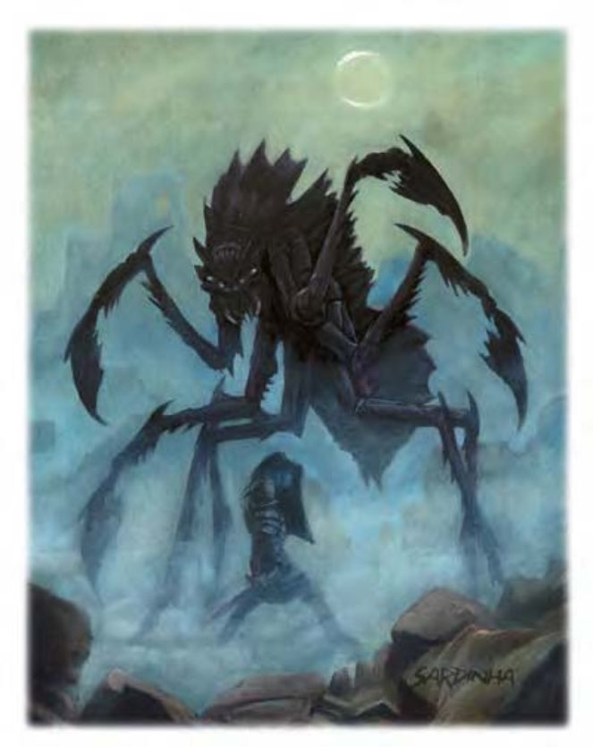

他们像庞大的蜘蛛，约人类两倍高。前肢连着大爪子。甲壳头部冒出四只深怀恶意的眼睛。猎魔蛛躯体与公牛差不多大，四只脚伸展开约14英尺长。约6500磅重。
猎魔蛛擅长取得失物、想要的东西、逃跑囚犯与敌人，负责带回给主人。猎魔蛛是透过邪恶法术所创造，强大恶魔贵族的战士与仆人。大多数学者认为其外型乃仿自狩魔蛛。许多强大恶魔利用无自我意识的猎魔蛛来执行危险或无法托付予其诡诈同族的任务。
| 资料栏位 | 猎魔蛛 (Retriever) 超大型构装生物（外界） |
|---|---|
| 生命骰 | 10d10+80 (135HP) |
| 先攻 | +3 |
| 速度 | 50英尺 (10格) |
| 防御等级 | 21 (-2体型、+3敏捷、+10天生)、接触11、措手不及18 |
| 基本攻击/擒抱 | +7 / +25 |
| 攻击 | 爪抓+15近战 (2d6+10) 及 眼射线+8远程接触 |
| 全力攻击 | 4爪抓+15近战 (2d6+10) 及 啮咬+10近战 (1d8+5) 及 眼射线+8远程接触 |
| 占据/触及 | 15英尺 / 10英尺 |
| 特殊攻击 | 眼射线、“寻找目标”、精通擒抱 |
| 特殊能力 | 构装特性、黑暗视觉60英尺、快速医疗5、昏暗视觉 |
| 豁免 | 强韧+3、反射+6、意志+3 |
| 属性 | 力量31、敏捷17、体质―、智力―、感知11、魅力1 |
| 技能 | ― |
| 专长 | ― |
| 环境 | 无底深渊 |
| 组织 | 单独 |
| 挑战级数 | 11 |
| 宝藏 | 无 |
| 阵营 | 总是混乱邪恶 |
| 进化 | 11-15HD (超大型) ; 16-30HD (巨型) |
| 等级修正值 | ― |
猎魔蛛以四只爪子攻击，但其眼射线更为危险。
眼射线（超自然）：猎魔蛛眼睛可产生四种不同的魔法射线，距离100英尺。猎魔蛛每轮可使用即时动作发射一次眼射线，且每种射线每4轮才能使用一次。猎魔蛛可于同一轮中使用物理攻击并发射眼射线。所有射线的豁免DC=18。豁免DC的调整值与敏捷调整值相同。
“寻找目标”（类法术能力）：猎魔蛛可正确无误地执行寻找特定物品或生物的命令，视同受到法术“感知位置”指引。下令者必须看过欲找寻的生物（拥有目标生物的物品亦可）或接触过欲找寻的物品。此能力等同于八级法术。
精通擒抱（特异）：当猎魔蛛啮咬到对手时，即可利用即时动作进行啮咬攻击（视为擒抱），且不会引发对方借机攻击。如果啮咬成功，则可定住对手并塞进嘴里。猎魔蛛通常以此方式取回东西。